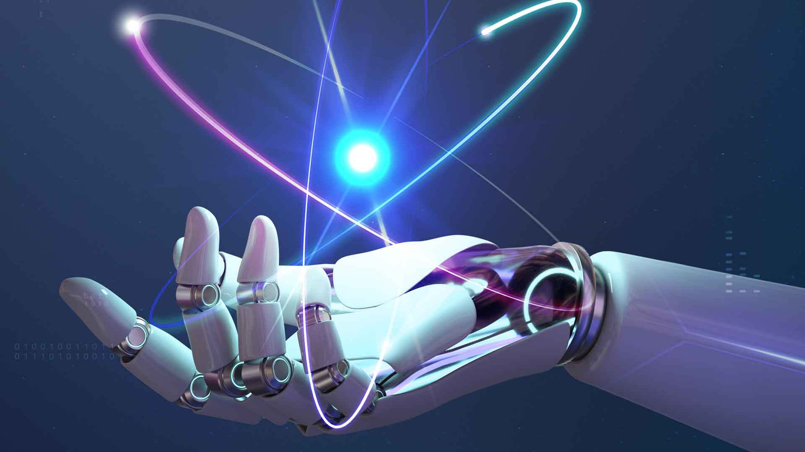
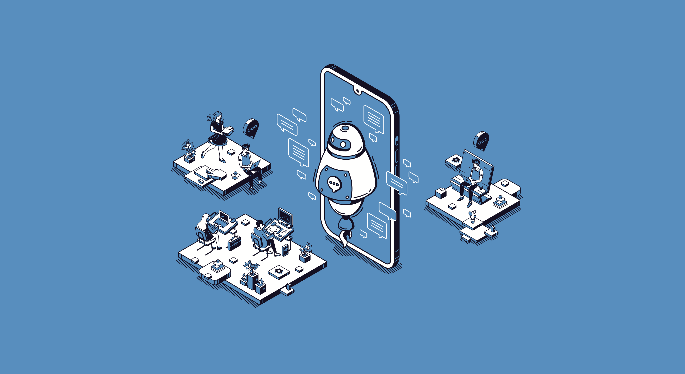

Le développement de l'IA : L'IA est en constante évolution et les chercheurs travaillent actuellement à améliorer les algorithmes, les techniques d'apprentissage automatique et les modèles de traitement du langage naturel. Les experts cherchent à améliorer l'exactitude et la capacité des modèles pour résoudre des problèmes de plus en plus complexes.

2. Les outils d'IA pour le développement de logiciels :
Les outils d'IA pour le développement de logiciels : Les entreprises commencent à utiliser des outils d'IA pour améliorer le processus de développement de logiciels. Les outils basés sur l'IA peuvent aider les développeurs à détecter les erreurs de codage, à accélérer la détection des bugs et à automatiser certaines tâches.
3. L'IA et la transformation numérique :
L'IA est de plus en plus considérée comme un élément clé de la transformation numérique des entreprises. Les entreprises peuvent utiliser l'IA pour améliorer l'expérience client, optimiser les processus métier et améliorer la prise de décision.

4. L'IA et les chatbots :
Les chatbots sont des interfaces conversationnelles qui permettent aux entreprises d'automatiser les interactions avec leurs clients. Ils peuvent être utilisés pour répondre aux questions fréquentes, fournir des informations sur les produits et services, ou encore pour aider à résoudre des problèmes techniques.
Les chatbots sont de plus en plus sophistiqués grâce à l'utilisation de l'IA, ce qui leur permet de comprendre le langage naturel et de répondre de manière plus précise aux demandes des clients.
Les chatbots peuvent également être intégrés à d'autres technologies, telles que les applications mobiles ou les plates-formes de médias sociaux, pour fournir une expérience client cohérente. L'un des principaux avantages des chatbots est leur disponibilité 24 heures sur 24, 7 jours sur 7, ce qui permet aux clients d'obtenir rapidement des réponses à leurs questions à tout moment.
En outre, les chatbots peuvent gérer un grand nombre de requêtes simultanément, ce qui permet aux entreprises de réduire les temps d'attente pour leurs clients. Cependant, les chatbots ne peuvent pas toujours répondre à toutes les questions ou résoudre tous les problèmes. Il est donc important pour les entreprises de s'assurer que les clients ont accès à un support humain en cas de besoin.
En somme, les chatbots sont une technologie de plus en plus populaire dans le domaine de l'IA et offrent de nombreux avantages pour les entreprises cherchant à améliorer l'expérience client et à automatiser les interactions.
5. Conclusion
Pour conclure, l'IA est un domaine en constante évolution, il est donc important de rester à jour sur les dernières avancées pour rester compétitif.